ВЕРХНЯЯ КОНЕЧНОСТЬ
Плечевой пояс: 1.1.1 Введение в плечевую область (0:30) 1.1.2. Ключица и лопатка (4:11) 1.1.3. Движения ключицы и лопатки (0:59) 1.1.4 Плечевой сустав и его движения (1:43) 1.1.5 Обзор костей, суставов и связок плеча (1:17) 1.1.6 Введение в мышцы плеча (0:23) 1.1.7 Мышцы, проходящие от лопатки к плечевой кости (3:48) 1.1.8 Мышцы, проходящие из туловища в лопатку (3:58) 1.1.9. Latissimus dorsi, большая грудная и дельтовидная мышцы (2:48) 1.1.10 Обзор мышц плеча (1:15) 1.1.11 Ориентир структуры для нервов и кровеносных сосудов (2:29) 1.1.12 Вены области плеча (3:09) 1.1.13 Артерии плечевой области (2:35) 1.1.14 Нервы области плеча: плечевое сплетение (5:33) 1.1.15 Обзор кровеносных сосудов и нервов области плеча (2:26) Рука и предплечье: 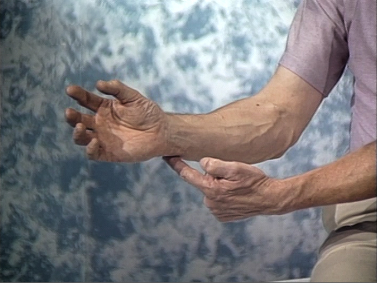 1.2.1 Введение в руку и предплечье (2:19) 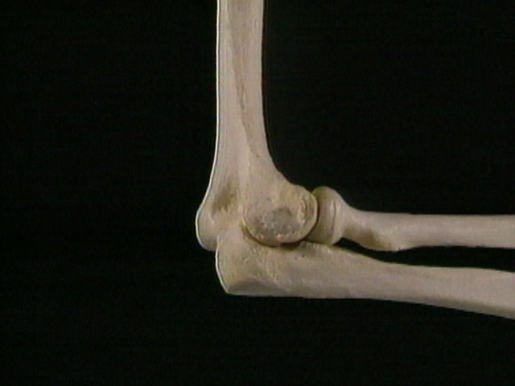 1.2.2 Кости руки и предплечья (3:03) 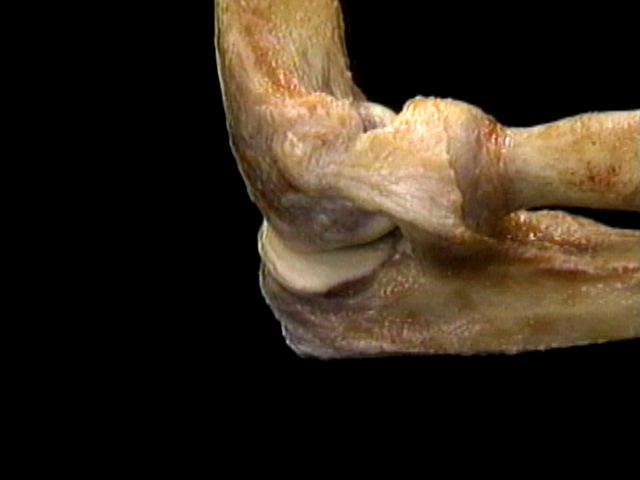 1.2.3 Локтевой сустав (3:18) 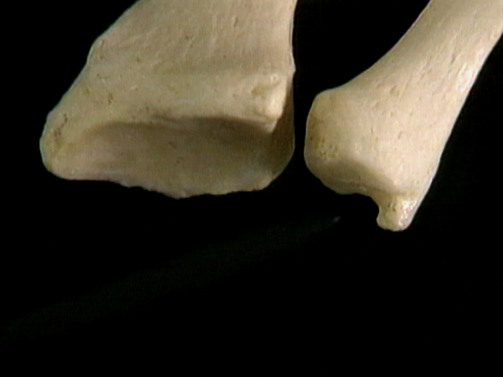 1.2.4 Дистальный лучезапястный сустав (1:38) 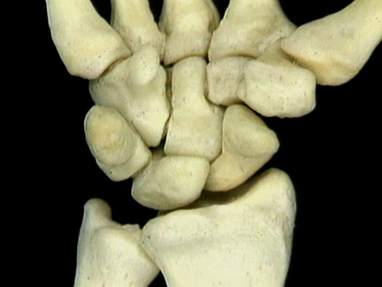 1.2.5 Запястье (3:38) 1.2.6 Обзор костей, суставов и связок руки и предплечья (1:53) 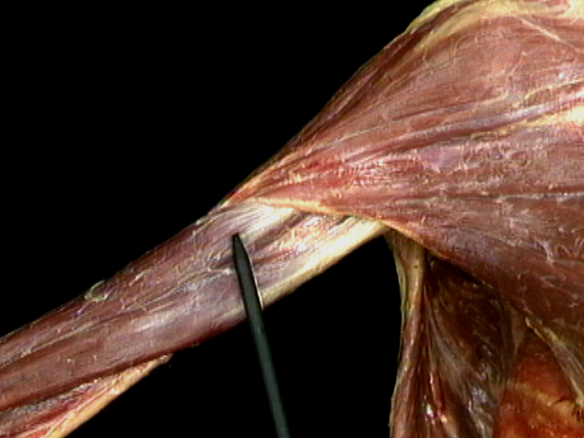 1.2.7 Мышцы, которые двигают локтем (4:13) 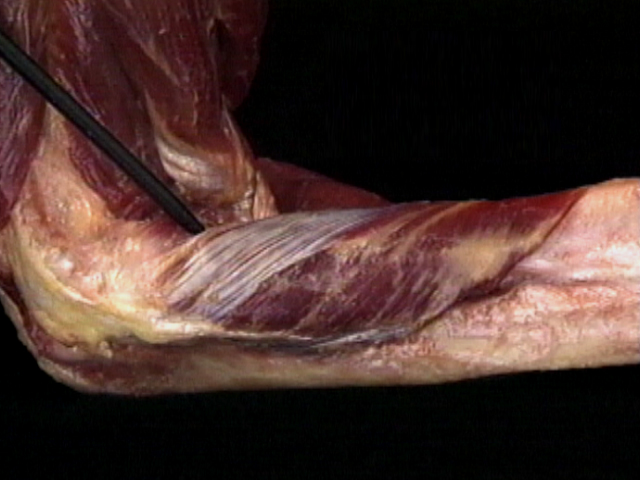 1.2.8 Мышцы, которые вращают предплечье (2:29) 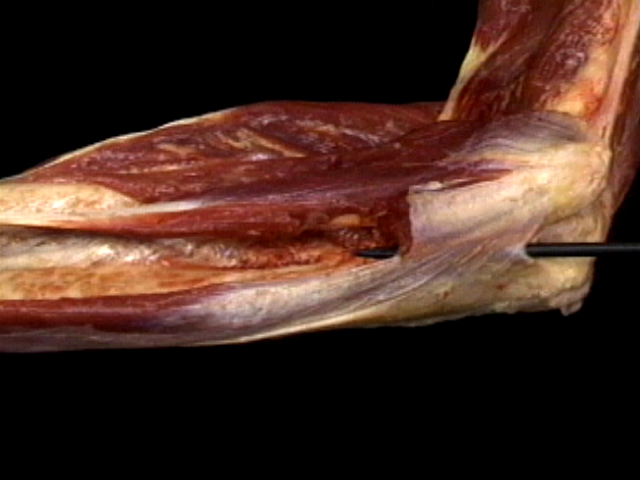 1.2.9 Мышцы, которые двигают запястье (4:04) 1.2.10 Обзор и обзор мышц руки и плеча (2:36) 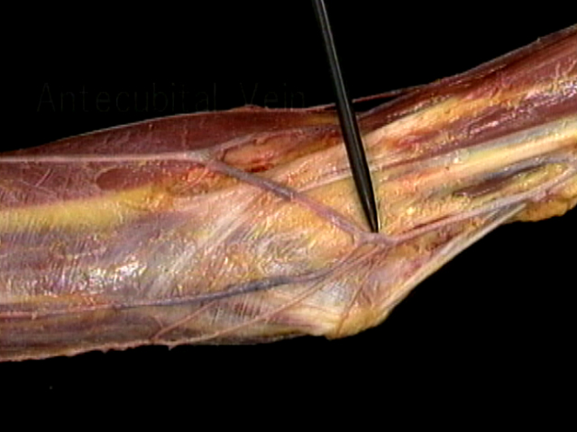 1.2.11 Артерии и вены руки (2:57) 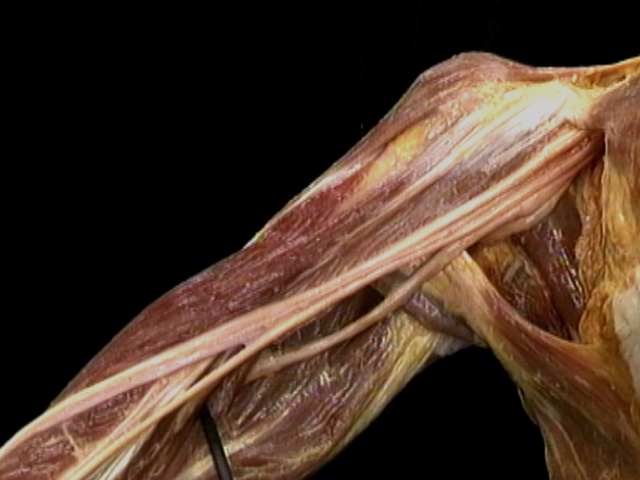 1.2.12 Нервы руки (4:04) 1.2.13 Обзор кровеносных сосудов и нервов руки и предплечья (1:28) Рука: 1.3.1 Введение в руку (0:28) 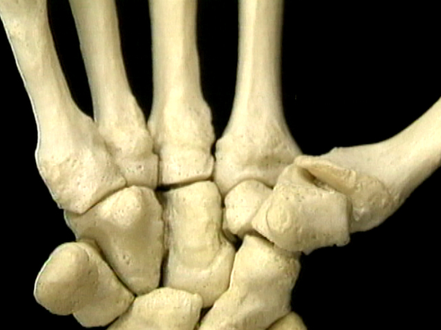 1.3.2 Кости и суставы запястья и кисти (3:24) 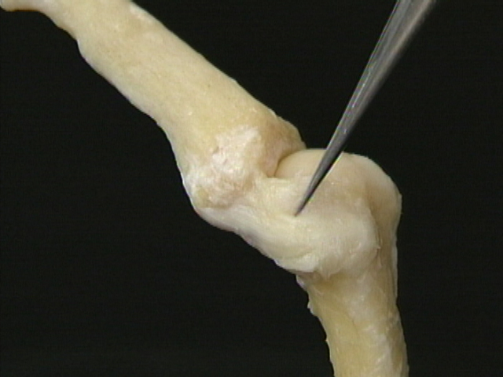 1.3.3 Кости и суставы пальцев (3:56) 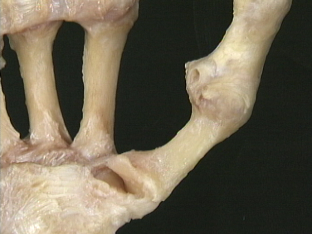 1.3.4 Кости и суставы большого пальца (3:06) 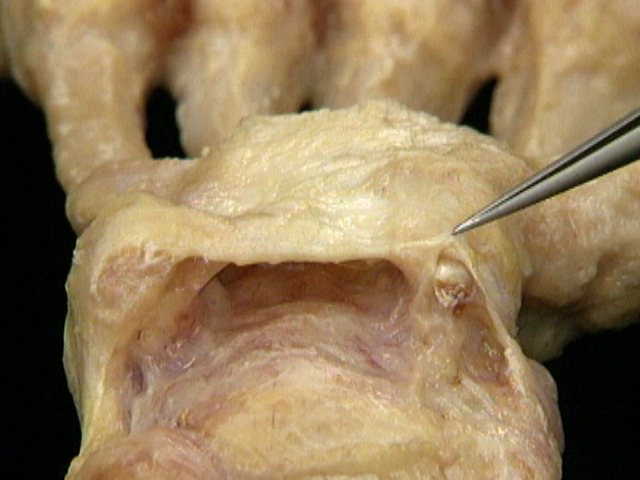 1.3.5 Шкилоподобные структуры и связки на запястье (2:22) 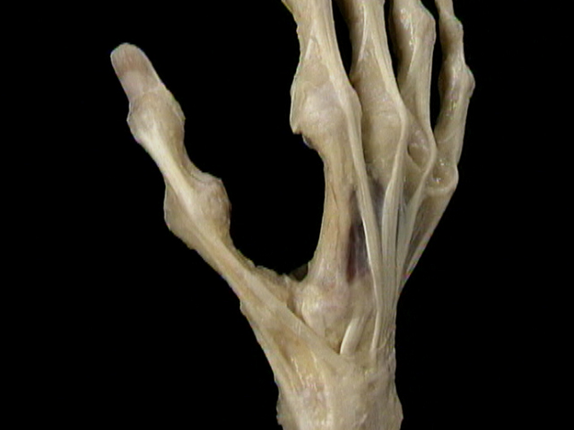 1.3.6 Шкилоподобные структуры и связки пальцев и большого пальца (3:41) 1.3.7 Обзор костей, суставов и связок кисти 1:25) 1.3.8 Введение в мышцы кисти (0:25) 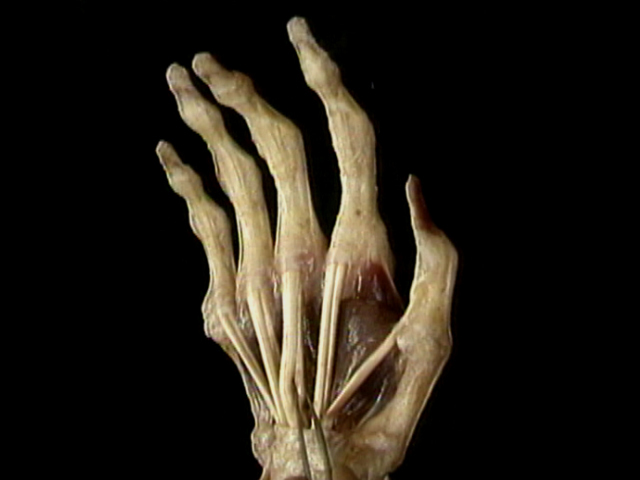 1.3.9 Длинные (внешние) мышцы-сгибатели пальцев (3:14) 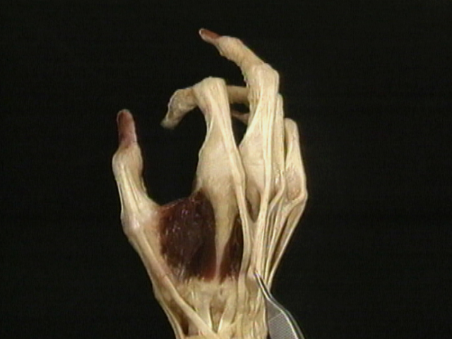 1.3.10 Мышцы-разгибатели длинных (внешних) пальцев (1:52) 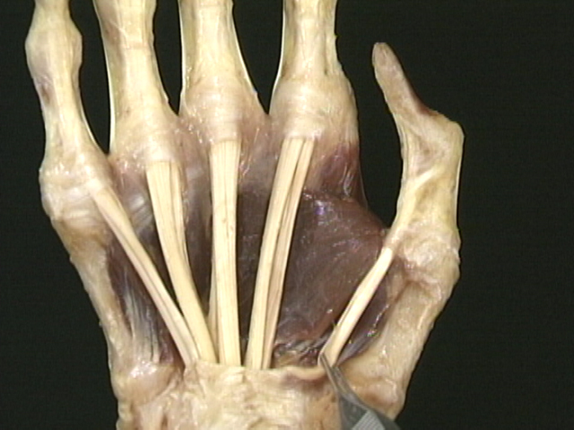 1.3.11 Длинные (внешние) мышцы большого пальца (2:38) 1.3.12 Обзор и обзор всех мышц предплечья (2:41) 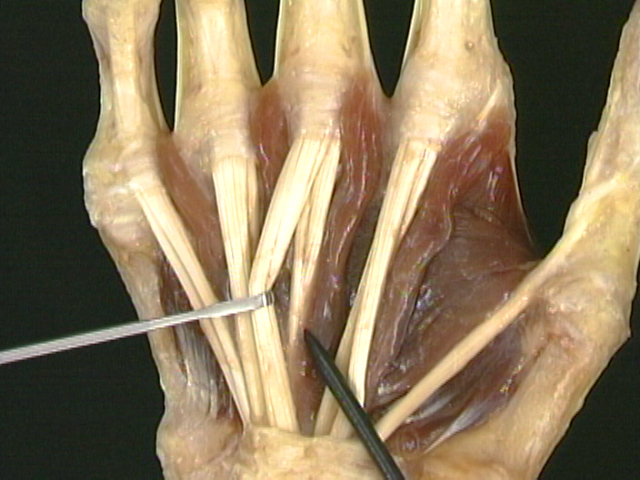 1.3.13 Короткие (внутренние) мышцы пальцев (3:55) 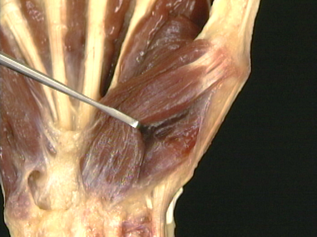 1.3.14 Короткие (внутренние) мышцы большого пальца (3:32) 1.3.15 Обзор внутренних мышц рук (1:40) 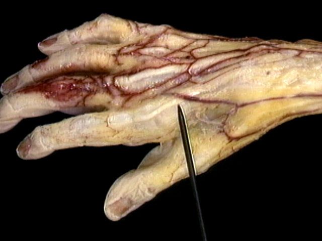 1.3.16 Вены предплечья и кисти (1:10) 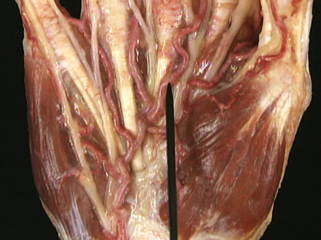 1.3.17 Артерии предплечья и кисти (4:11) 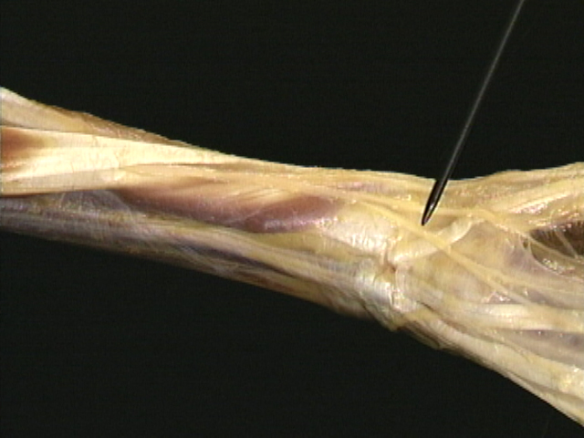 1.3.18 Лучевой нерв в предплечье и руке (1:35) 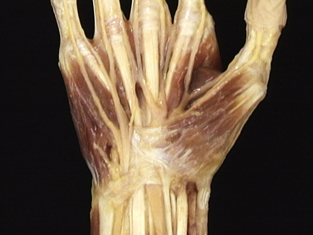 1.3.19 Срединные и локтевые нервы предплечья и кисти (4:06) 1.3.20 Обзор кровеносных сосудов и нервов предплечья и кисти (2:19) 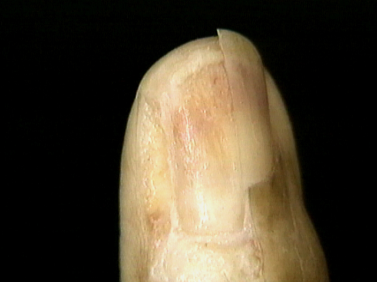 1.3.21 Кожа кисти, ногти (2:59)
Плечевой пояс:
1.1.1 Введение в плечевую область (0:30) 1.1.2. Ключица и лопатка (4:11) 1.1.3. Движения ключицы и лопатки (0:59) 1.1.4 Плечевой сустав и его движения (1:43) 1.1.5 Обзор костей, суставов и связок плеча (1:17) 1.1.6 Введение в мышцы плеча (0:23) 1.1.7 Мышцы, проходящие от лопатки к плечевой кости (3:48) 1.1.8 Мышцы, проходящие из туловища в лопатку (3:58) 1.1.9. Latissimus dorsi, большая грудная и дельтовидная мышцы (2:48) 1.1.10 Обзор мышц плеча (1:15) 1.1.11 Ориентир структуры для нервов и кровеносных сосудов (2:29) 1.1.12 Вены области плеча (3:09) 1.1.13 Артерии плечевой области (2:35) 1.1.14 Нервы области плеча: плечевое сплетение (5:33) 1.1.15 Обзор кровеносных сосудов и нервов области плеча (2:26) Рука и предплечье: 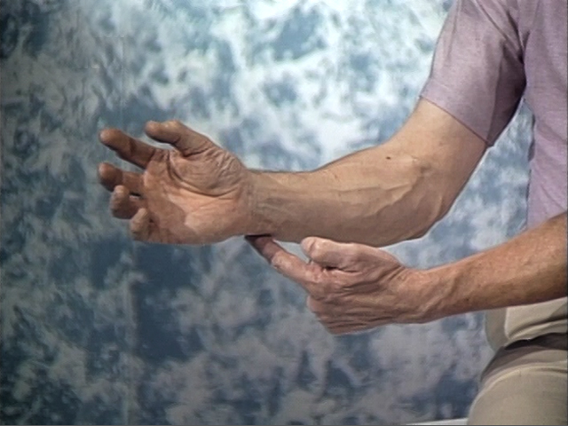 1.2.1 Введение в руку и предплечье (2:19) 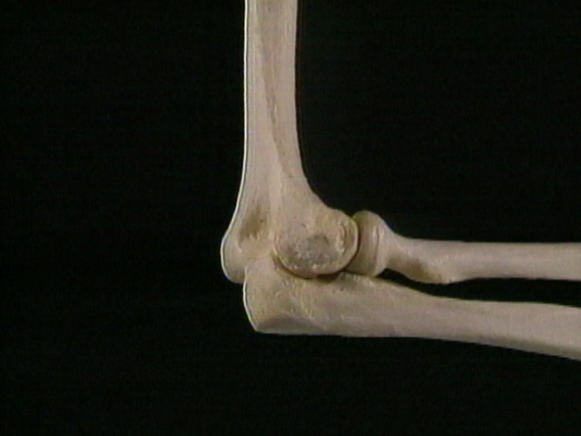 1.2.2 Кости руки и предплечья (3:03) 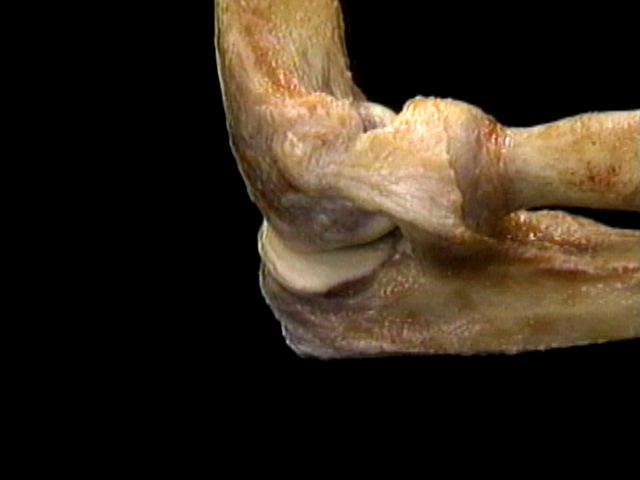 1.2.3 Локтевой сустав (3:18) 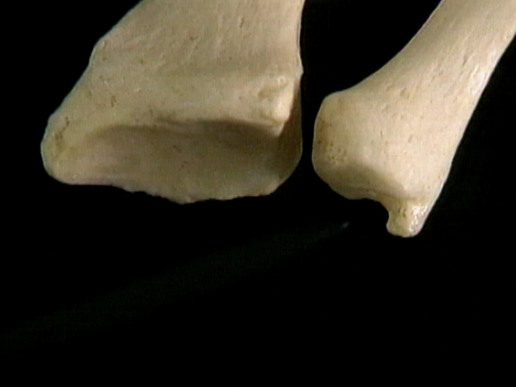 1.2.4 Дистальный лучезапястный сустав (1:38) 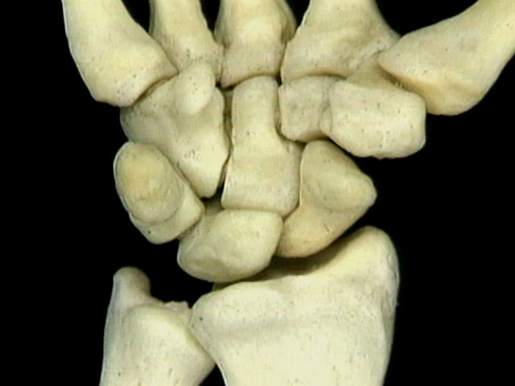 1.2.5 Запястье (3:38) 1.2.6 Обзор костей, суставов и связок руки и предплечья (1:53) 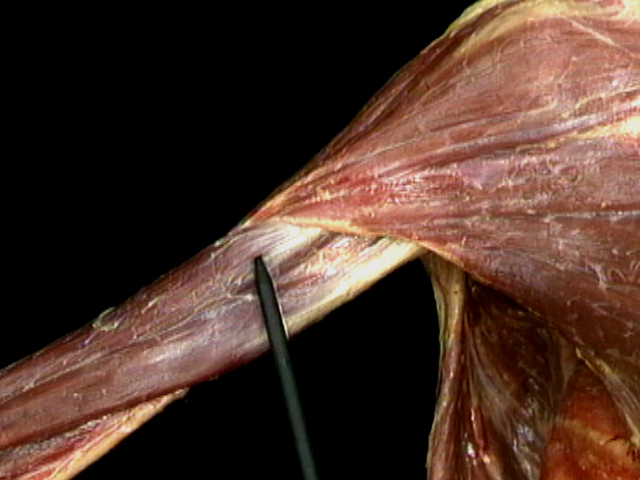 1.2.7 Мышцы, которые двигают локтем (4:13) 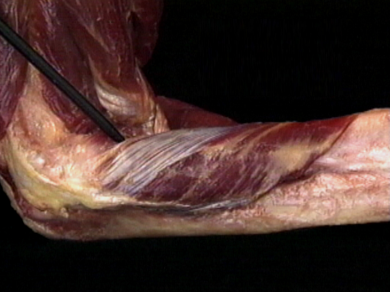 1.2.8 Мышцы, которые вращают предплечье (2:29) 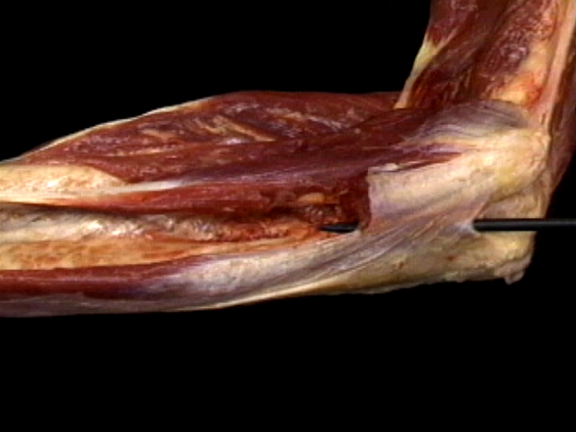 1.2.9 Мышцы, которые двигают запястье (4:04) 1.2.10 Обзор и обзор мышц руки и плеча (2:36) 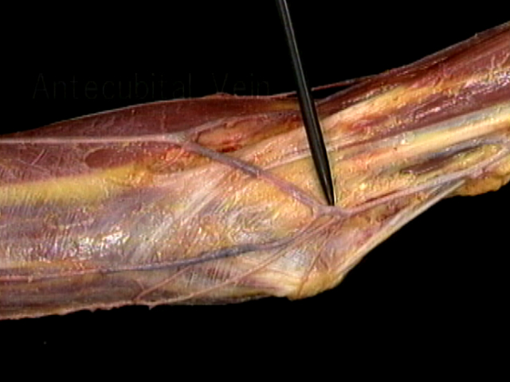 1.2.11 Артерии и вены руки (2:57) 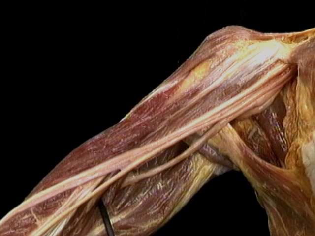 1.2.12 Нервы руки (4:04) 1.2.13 Обзор кровеносных сосудов и нервов руки и предплечья (1:28) Рука: 1.3.1 Введение в руку (0:28) 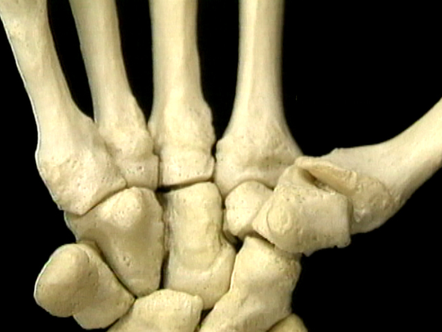 1.3.2 Кости и суставы запястья и кисти (3:24) 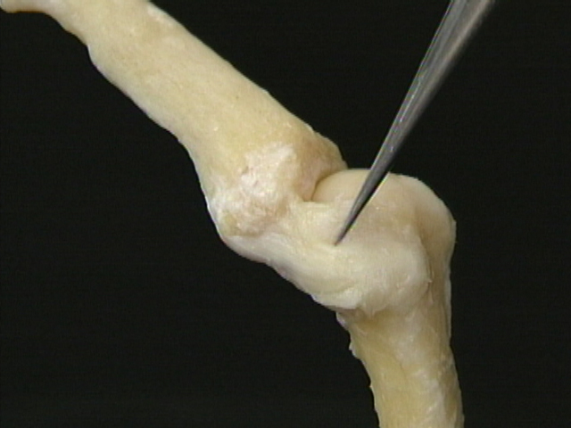 1.3.3 Кости и суставы пальцев (3:56) 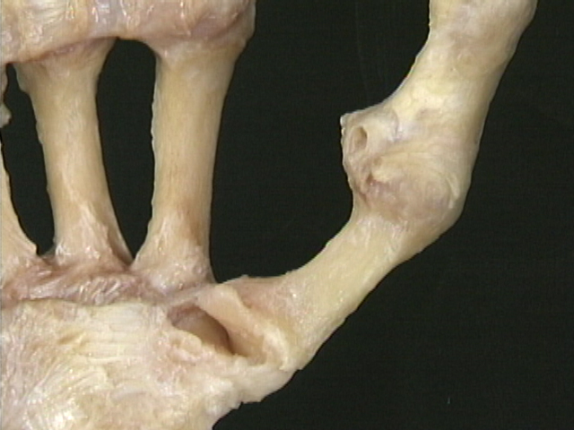 1.3.4 Кости и суставы большого пальца (3:06) 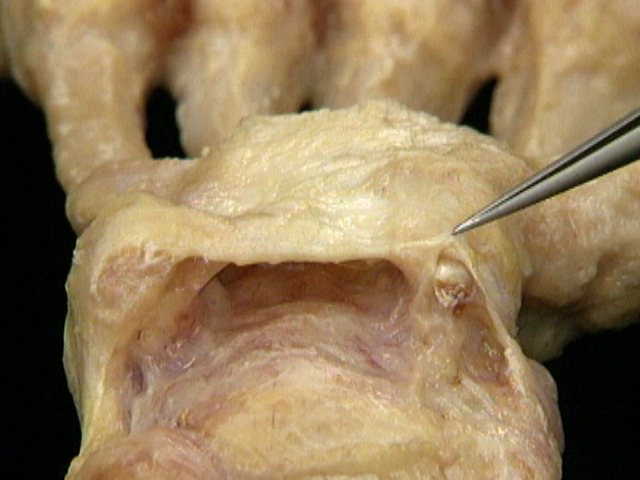 1.3.5 Шкилоподобные структуры и связки на запястье (2:22) 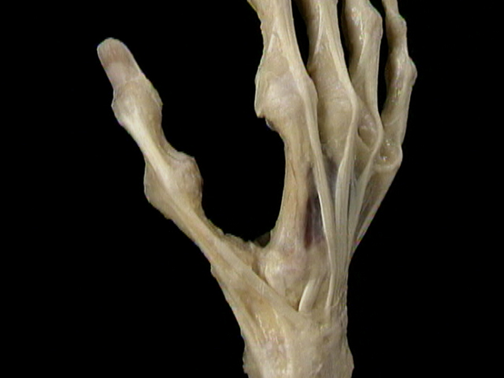 1.3.6 Шкилоподобные структуры и связки пальцев и большого пальца (3:41) 1.3.7 Обзор костей, суставов и связок кисти 1:25) 1.3.8 Введение в мышцы кисти (0:25) 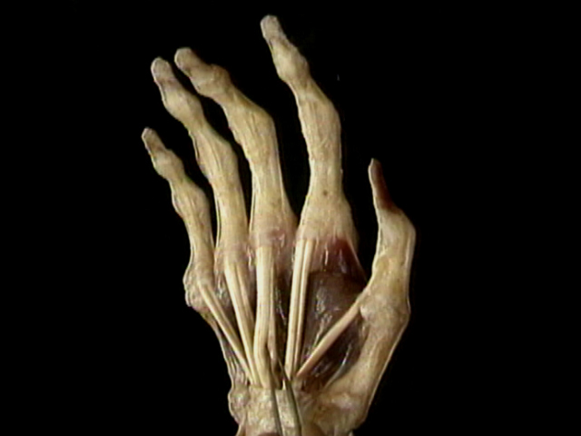 1.3.9 Длинные (внешние) мышцы-сгибатели пальцев (3:14) 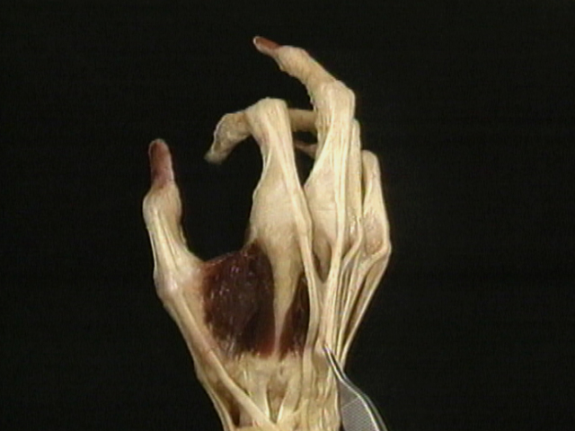 1.3.10 Мышцы-разгибатели длинных (внешних) пальцев (1:52) 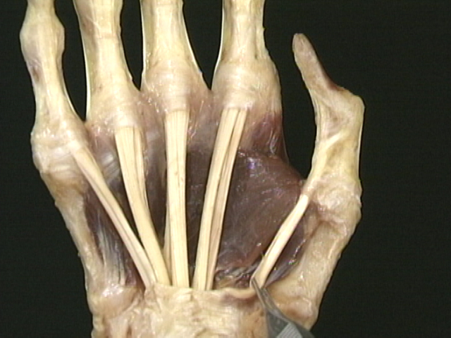 1.3.11 Длинные (внешние) мышцы большого пальца (2:38) 1.3.12 Обзор и обзор всех мышц предплечья (2:41) 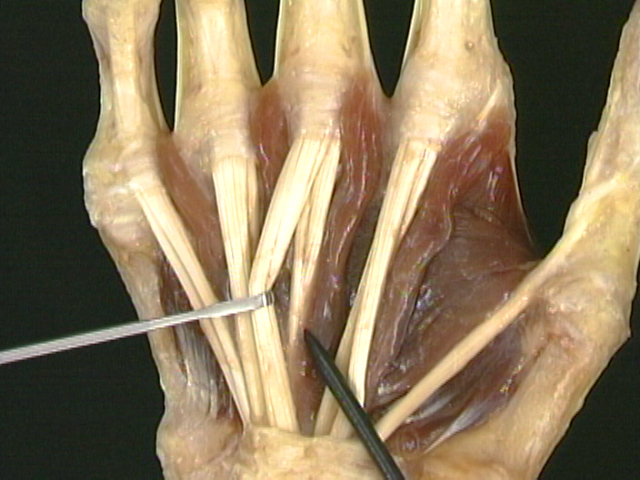 1.3.13 Короткие (внутренние) мышцы пальцев (3:55) 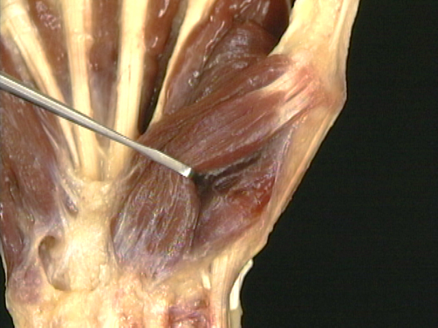 1.3.14 Короткие (внутренние) мышцы большого пальца (3:32) 1.3.15 Обзор внутренних мышц рук (1:40) 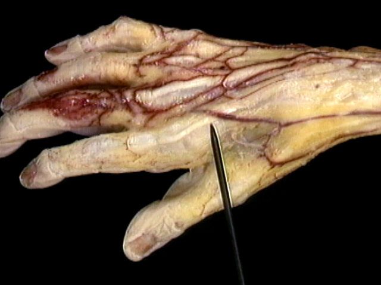 1.3.16 Вены предплечья и кисти (1:10) 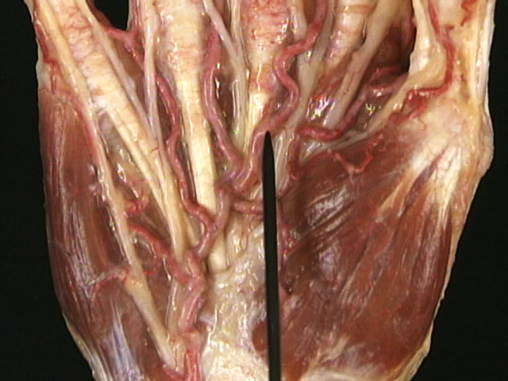 1.3.17 Артерии предплечья и кисти (4:11) 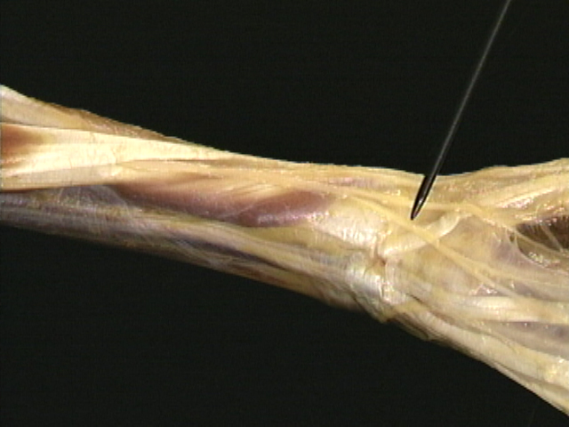 1.3.18 Лучевой нерв в предплечье и руке (1:35) 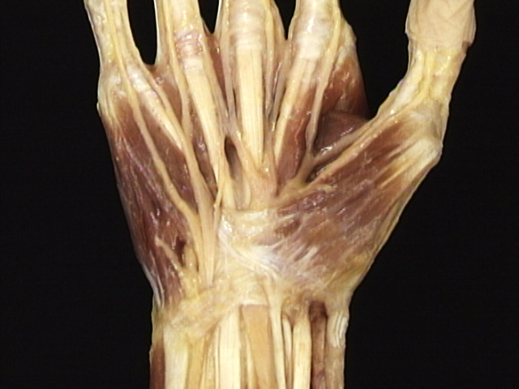 1.3.19 Срединные и локтевые нервы предплечья и кисти (4:06) 1.3.20 Обзор кровеносных сосудов и нервов предплечья и кисти (2:19) 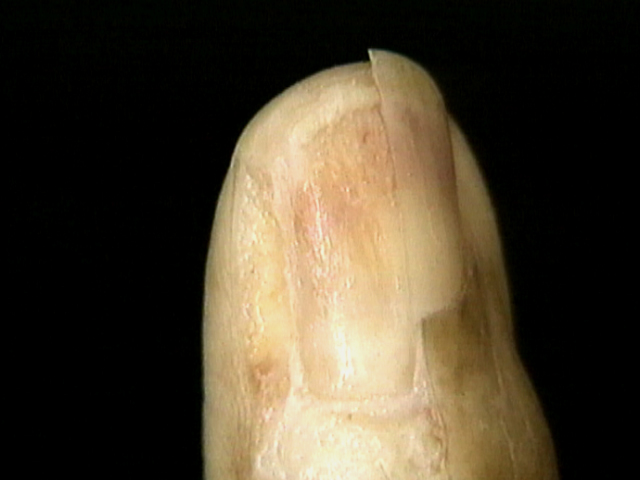 1.3.21 Кожа кисти, ногти (2:59)
Рука и предплечье:
 1.2.1 Введение в руку и предплечье (2:19)  1.2.2 Кости руки и предплечья (3:03)  1.2.3 Локтевой сустав (3:18)  1.2.4 Дистальный лучезапястный сустав (1:38)  1.2.5 Запястье (3:38) 1.2.6 Обзор костей, суставов и связок руки и предплечья (1:53)  1.2.7 Мышцы, которые двигают локтем (4:13)  1.2.8 Мышцы, которые вращают предплечье (2:29)  1.2.9 Мышцы, которые двигают запястье (4:04) 1.2.10 Обзор и обзор мышц руки и плеча (2:36)  1.2.11 Артерии и вены руки (2:57)  1.2.12 Нервы руки (4:04) 1.2.13 Обзор кровеносных сосудов и нервов руки и предплечья (1:28) Рука: 1.3.1 Введение в руку (0:28)  1.3.2 Кости и суставы запястья и кисти (3:24)  1.3.3 Кости и суставы пальцев (3:56)  1.3.4 Кости и суставы большого пальца (3:06)  1.3.5 Шкилоподобные структуры и связки на запястье (2:22)  1.3.6 Шкилоподобные структуры и связки пальцев и большого пальца (3:41) 1.3.7 Обзор костей, суставов и связок кисти 1:25) 1.3.8 Введение в мышцы кисти (0:25)  1.3.9 Длинные (внешние) мышцы-сгибатели пальцев (3:14)  1.3.10 Мышцы-разгибатели длинных (внешних) пальцев (1:52)  1.3.11 Длинные (внешние) мышцы большого пальца (2:38) 1.3.12 Обзор и обзор всех мышц предплечья (2:41)  1.3.13 Короткие (внутренние) мышцы пальцев (3:55)  1.3.14 Короткие (внутренние) мышцы большого пальца (3:32) 1.3.15 Обзор внутренних мышц рук (1:40)  1.3.16 Вены предплечья и кисти (1:10)  1.3.17 Артерии предплечья и кисти (4:11)  1.3.18 Лучевой нерв в предплечье и руке (1:35)  1.3.19 Срединные и локтевые нервы предплечья и кисти (4:06) 1.3.20 Обзор кровеносных сосудов и нервов предплечья и кисти (2:19)  1.3.21 Кожа кисти, ногти (2:59)
Рука:
1.3.1 Введение в руку (0:28)  1.3.2 Кости и суставы запястья и кисти (3:24)  1.3.3 Кости и суставы пальцев (3:56)  1.3.4 Кости и суставы большого пальца (3:06)  1.3.5 Шкилоподобные структуры и связки на запястье (2:22)  1.3.6 Шкилоподобные структуры и связки пальцев и большого пальца (3:41) 1.3.7 Обзор костей, суставов и связок кисти 1:25) 1.3.8 Введение в мышцы кисти (0:25)  1.3.9 Длинные (внешние) мышцы-сгибатели пальцев (3:14)  1.3.10 Мышцы-разгибатели длинных (внешних) пальцев (1:52)  1.3.11 Длинные (внешние) мышцы большого пальца (2:38) 1.3.12 Обзор и обзор всех мышц предплечья (2:41)  1.3.13 Короткие (внутренние) мышцы пальцев (3:55)  1.3.14 Короткие (внутренние) мышцы большого пальца (3:32) 1.3.15 Обзор внутренних мышц рук (1:40)  1.3.16 Вены предплечья и кисти (1:10)  1.3.17 Артерии предплечья и кисти (4:11)  1.3.18 Лучевой нерв в предплечье и руке (1:35)  1.3.19 Срединные и локтевые нервы предплечья и кисти (4:06) 1.3.20 Обзор кровеносных сосудов и нервов предплечья и кисти (2:19)  1.3.21 Кожа кисти, ногти (2:59)
 1.1.1 Введение в плечевую область (0:30)
1.1.1 Введение в плечевую область (0:30) 1.1.2. Ключица и лопатка (4:11)
1.1.2. Ключица и лопатка (4:11) 1.1.3. Движения ключицы и лопатки (0:59)
1.1.3. Движения ключицы и лопатки (0:59) 1.1.4 Плечевой сустав и его движения (1:43)
1.1.4 Плечевой сустав и его движения (1:43) 1.1.5 Обзор костей, суставов и связок плеча (1:17)
1.1.5 Обзор костей, суставов и связок плеча (1:17) 1.1.6 Введение в мышцы плеча (0:23)
1.1.6 Введение в мышцы плеча (0:23) 1.1.7 Мышцы, проходящие от лопатки к плечевой кости (3:48)
1.1.7 Мышцы, проходящие от лопатки к плечевой кости (3:48) 1.1.8 Мышцы, проходящие из туловища в лопатку (3:58)
1.1.8 Мышцы, проходящие из туловища в лопатку (3:58) 1.1.9. Latissimus dorsi, большая грудная и дельтовидная мышцы (2:48)
1.1.9. Latissimus dorsi, большая грудная и дельтовидная мышцы (2:48) 1.1.10 Обзор мышц плеча (1:15)
1.1.10 Обзор мышц плеча (1:15) 1.1.11 Ориентир структуры для нервов и кровеносных сосудов (2:29)
1.1.11 Ориентир структуры для нервов и кровеносных сосудов (2:29) 1.1.12 Вены области плеча (3:09)
1.1.12 Вены области плеча (3:09) 1.1.13 Артерии плечевой области (2:35)
1.1.13 Артерии плечевой области (2:35) 1.1.14 Нервы области плеча: плечевое сплетение (5:33)
1.1.14 Нервы области плеча: плечевое сплетение (5:33) 1.1.15 Обзор кровеносных сосудов и нервов области плеча (2:26)
1.1.15 Обзор кровеносных сосудов и нервов области плеча (2:26)